Nix-NixOS-NixOps: From Development to Deployment
This slide deck is using the shower system - roll over the previews to see the notes and click any slide to go into presentation mode. Then use keys to navigate. Go fullscreen
Abstract:
Nix is a package manager that provides side-by-side installation of
multiple versions of a package, multi-user package management and easy
setup of build environments. This talk highlights how simple features
of a package manager can change the way components are developed and
deployed. We will investigate how Nix works and demonstrate how to
use it throughout the development cycle. We will create a
development environment, configure a system service, deploy to a
container for testing and finally deploy a remote system.
Nix, NixOS, NixOps
Nicolas B. Pierron
This presentation is dedicated at showing that a few features of a
package manager can make a suite of tools which are better than any
container-based system.
Goal :
Highlights benefits of package isolation.
Makes you promote isolation to your package manager.
Makes you experiment with Nix, NixOS, and NixOps
Package Manager issues
Coherency & Isolation
Source vs. Binary
Nix, Developer Friendly
NixOS, Abstract Configuration
NixOps, Deployment Friendly
Package Manager knowledge
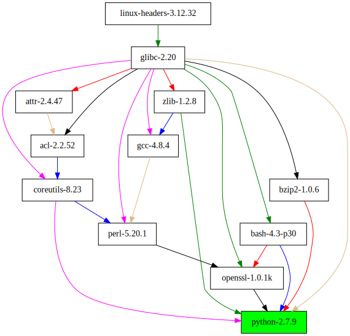
Here is what a package manager knows, it know that one package depends on
another, and thus, if you want to install python then you have to install
openssl.
This knowledge is basically an acyclic directed graph, where one package depends on other, or sub-parts of others. The goal of package manager is to make sure this graph is complete, and that when a user performs an install then the installation is consistent.
Filesystem Hierarchy Standard (FHS)
A typical Linux system has, among others, the following directories:
/bin This directory contains executable programs which are needed
in single user mode and to bring the system up or repair it.
/lib This directory should hold those shared libraries that are
necessary to boot the system and to run the commands in the
root filesystem.
Filesystem Hierarchy Standard (FHS)
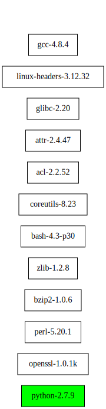
So basically the FHS looks like this once your packages are installed. You
know that they are all in the same column.
Filesystem Hierarchy Standard (FHS)
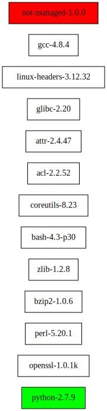
The good thing seems to be that once you have known location where you add your software, then everything becomes easier. The question then becomes, what the hell is this thing when we ask the package manager again?
Package Manager knowledge
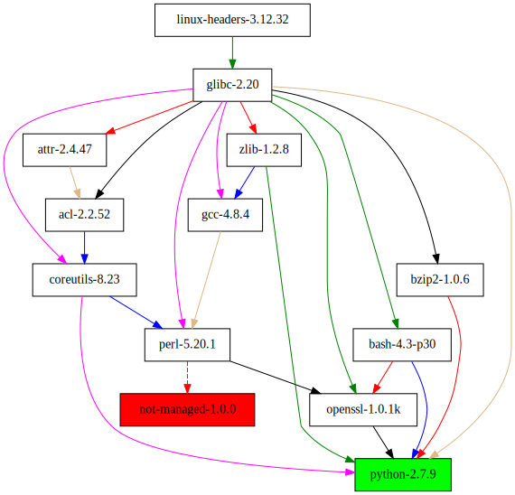
So, what if this not-managed software is just using perl? Then this package is using a software that we did not intent to use / install. This means that if persons responsible of OpenSSL decide to remove the dependency on perl, then updating python will break this not-manager software due to the removal of perl.
Package Manager lack-knowledge
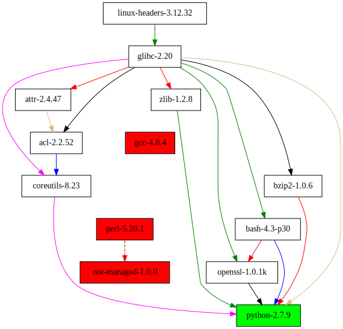
So, we update python, and its modified dependencies where OpenSSL no longer depends on perl. This means that our package which is not-managed by the package manager is no longer able to run because it depends on a dependency which is not required by the user of the system.
Package Manager Isolation
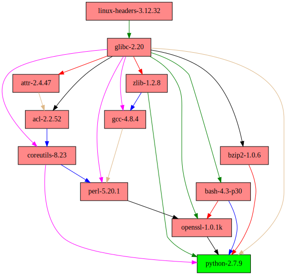
So one question we might ask, is why did we accept this situation in the first place? Why did we allowed the not-managed package to use software which were not installed explicitly, but implementation details of the package and package manager.
So, what would happen if we were to only install python and none of its dependencies in a standard location, and hide the rest of the dependencies in a non-standard location which cannot be used by package such as the not-managed package? This way the user would have to explicit "perl" as being one of the package that he has to install.
FHS + hidden (non-standard) path
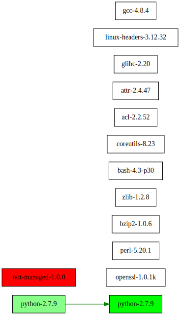
By adding isolation, the not-managed package would not have found perl, because it is installed in a location which is not standard.
FHS + hidden (non-standard) path
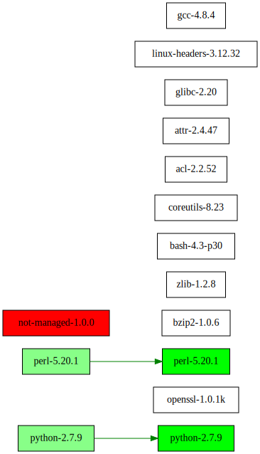
Adding such isolation benefit the user in 2 ways, he has to install precisely all the dependencies, and the not-managed package provide has to explicit what they depends on, based on the feedback of users.
User Environment + hidden path
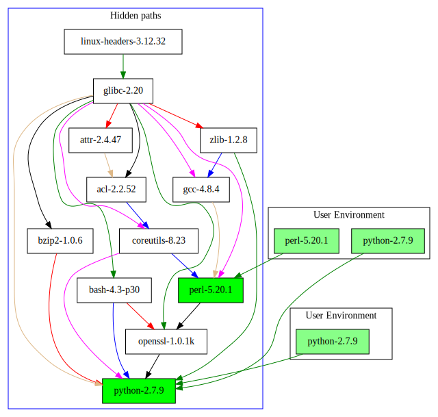
What makes the left column standard? We could have multiple directory which are made-up environment containing only a visible set of software. We could even imagine that a user can manage this kind of environment, and even manage multiple one.
What you see on this graph is almost what Nix do, we have packages which are stored isolated from each others, and we are making views which are including a specific set of installed packages.
The interesting part, is that a user can build such environments for him-self. I will not go deeper in the specific of Nix implementation, nor how Nix ensure that a user can build packages.
Package Manager issues
Coherency & Isolation
Source vs. Binary
Nix, Developer Friendly
NixOS, Abstract Configuration
NixOps, Deployment Friendly
Source vs. Binary Packages
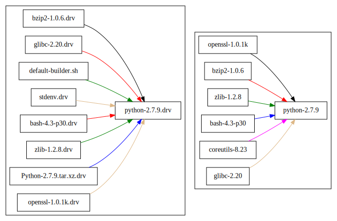
In terms of graph, both are about managing dependencies, one manage the build time dependencies while the other manages the runtime dependencies. If you have no environment dependent look-up for programs, then the list of source dependencies is a super set of the runtime dependencies.
Source tarballs for building python: 324 MB
Uncompressed binary for installing python: 121 MB (excluding 54 MB for perl, and 89 MB for gcc)
FHS, source distribution sucks!
One of the biggest issue of source-based package manager, is the lack of knowledge of the runtime dependencies. Basically, this means that any build dependencies will remain visible to all users even after installing packages.
Fortunately, this is a problem which can be solved by adding isolation between packages, and by scanning isolated packages for references to other isolated packages. This is a process identical to a Garbage Collector in a managed language such as python, where the garbage collector looks for pointers to other allocated memory regions. (:TODO: make a slide for that?)
Customization, binary distribution sucks!
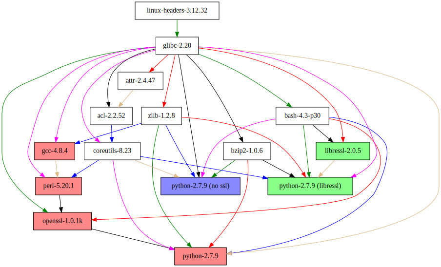
One of the biggest issue of binary package managers, is the lack of possibility to install software which are incompatible from each others. For example, having a dependency on one version of python instead of another one, implies that you have to torture the FHS to make all versions works concurrently to each others.
Also note that this is an isolation issue, if you were to install each version in isolation for each others, then you would not have to suffix binaries with version numbers.
Apparently, python developers noticed and partially solved this issue for them-self by introducing a tool which give you the ability to work in an isolated user environment. So why can't Linux distribution catch-up on these?
Package Manager issues
Nix, Developer Friendly
Introduction
Customize packages
Building Environments
NixOS, Abstract Configuration
NixOps, Deployment Friendly
Now I made my point! You are all depressed, you realized that the package manager you have been relying on during all these years is lacking this *one* feature.
Before you go request that you want isolation and user-environments in your package manager, … I should make you even more depressed by demonstrating how such feature would be useful in your day-to-day work.
Build for the user
Store in isolation
Independent of the package manager
Backend of the Nix language
Backend of Guix (Scheme)
Nix language - derivation
derivation {
name = "my-package";
builder = ./builder.sh;
system = "x86-64-linux";
envvar = 1;
}
Nixpkgs - stdenv.mkDerivation
{ stdenv, fetchurl, zlib, bzip2, …, openssl }:
stdenv.mkDerivation {
name = "python3-3.4.2";
src = fetchurl {
url = http://www.python.org/…/Python-3.4.2.tar.xz ;
sha256 = "1vrd9gqd…s619cv8w";
};
buildInputs = [ zlib bzip2 … openssl ];
// default: ./configure --prefix=$out; make; make install
}
Package Manager issues
Nix, Developer Friendly
Introduction
Customize packages
Building Environments
NixOS, Abstract Configuration
NixOps, Deployment Friendly
lib.overrideDerivation python34 {
# Do not fetch the sources
# Use a local copy instead.
src = /home/nicolas/cpython ;
}
Package Manager issues
Nix, Developer Friendly
Introduction
Customize packages
Building Environments
NixOS, Abstract Configuration
NixOps, Deployment Friendly
nix-shell Build Environment
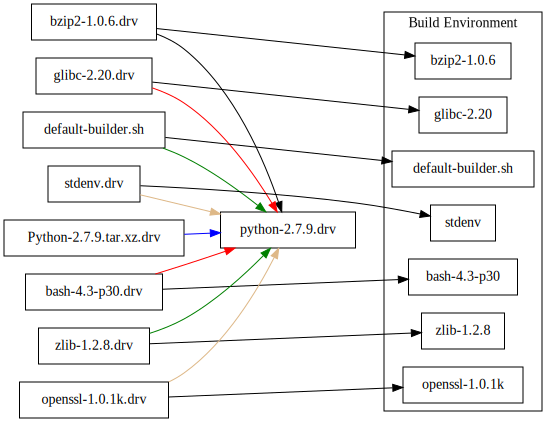
Package Manager issues
Nix, Developer Friendly
NixOS, Abstract Configuration
Configuration Management
Declarative & Modular
NixOps, Deployment Friendly
Principle: Automate the configuration to reproduce it.
Many tools:
Puppet
Chef
Ansible
Salt
…
Configuration by mutation
Only describe a subset of the configuration.
Incomplete: Cannot describe the absence of all unused packages.
Configuration by installation
Complete: Anything which is included is present.
Many tools:
rpm
deb
…
NixOS - Configuration with isolation
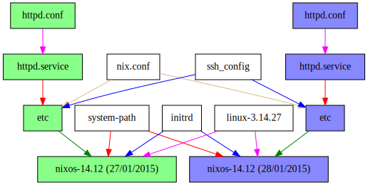
Package Manager issues
Nix, Developer Friendly
NixOS, Abstract Configuration
Configuration Management
Declarative & Modular
NixOps, Deployment Friendly
NixOS: Declarative configuration
{
services.openssh.enable = true;
users.extraUsers.root.openssh.authorizedKeys.keyFiles = [
/home/nicolas/.ssh/id.pub
];
}
NixOS: Modular configuration
{
imports = [ ./minimal-conf.nix ];
services.httpd = {
enable = true;
adminAddr = "email@local.host";
documentRoot = ./. ; # Serve the current directory
};
networking.firewall.allowedTCPPorts = [ 80 ];
}
Package Manager issues
Nix, Developer Friendly
NixOS, Abstract Configuration
NixOps, Deployment Friendly
NixOps: Deploying closures
{
pres =
{ config, pkgs, ... }:
{ imports = [ ./modular-conf.nix ];
deployment.targetEnv = "container";
deployment.container.host = "jupiter.nbp.name";
};
}
Benefits of isolation:
Maps directly to the package manager graph.
Explicits external program dependencies.
Help testing custom package.
Setup multiple environment (even for users).
Copy closures of a package, or a complete system.
 Nicolas B. Pierron
Nicolas B. Pierron